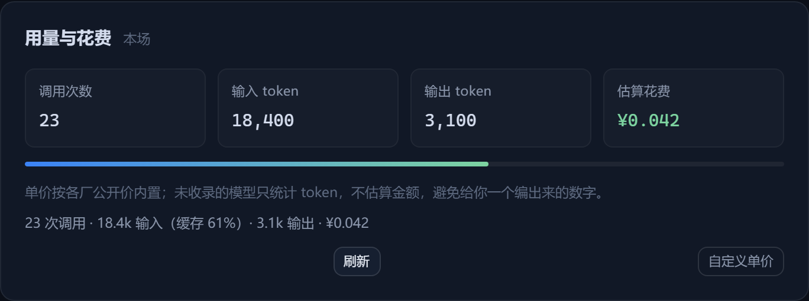
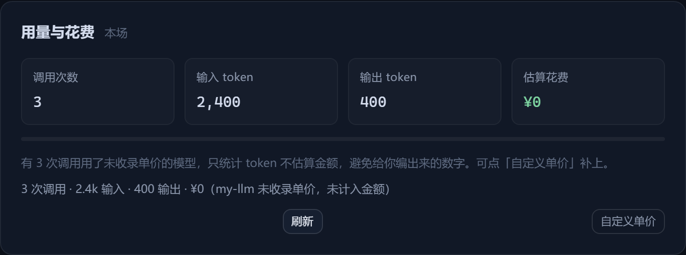
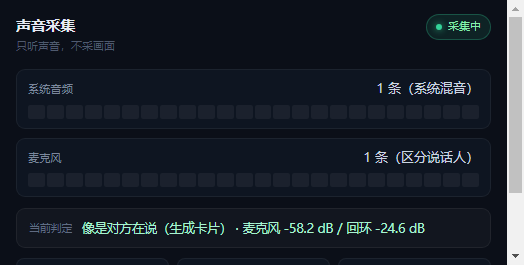
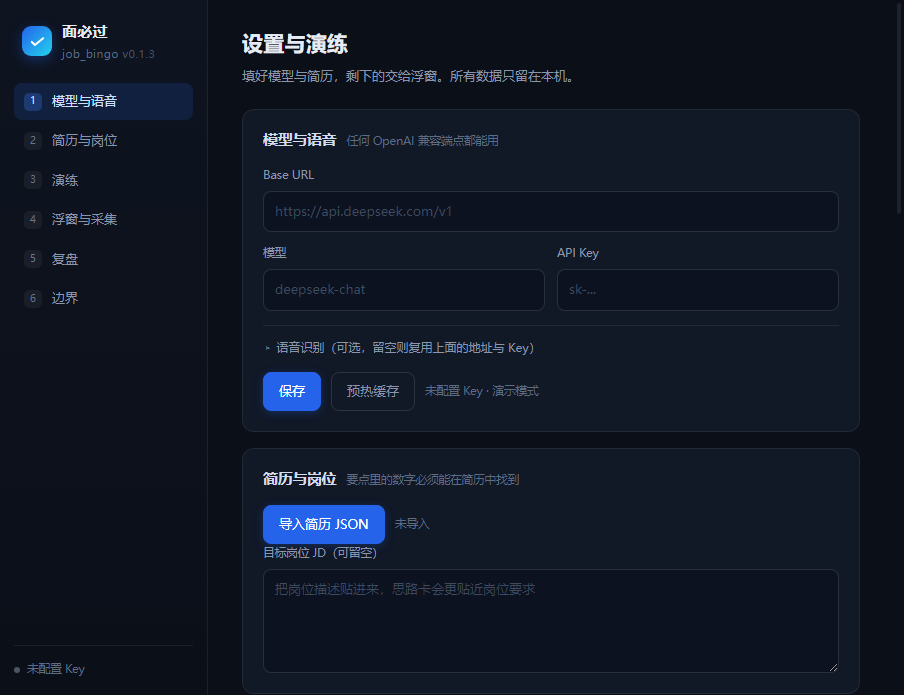

根据面试官刚问出的问题 + 你自己的简历，浮窗立刻给出 2–4 条、每条不超过 18 字的要点大纲。 不代答 —— 你用自己的语言组织回答。
validateHintCard 才是法律 —— 模型迟早会飘，校验器不会。
每条要点必须连过 五道闸门，长得像「能直接念出的成稿」一律拦下重写。
所有输入源 —— 手动输入、手机端 WS、系统声音回环、麦克风 —— 全部汇流到同一个流水线，之后的行为完全一致。
疑问词、或「继续」「具体」这类祈使式追问才触发。
避免把你自己的回答当成新问题，反复出无关的卡。
同一个问题 2200ms 内不重复出卡，
防止 ASR 重复出字把浮窗刷成一片。
按字做 Jaccard，> 0.72 视为同一问题跳过。
口语里的重复表述不会触发第二次生成。
内存里保留最近 6 轮送给模型消歧，
「你刚才说的那个项目」也能对得上号。
设置面板底部实时显示「收到 / 去重跳过 / 出卡」三个计数，每一步都看得见。
每一件都对着面试桌上的一个具体问题。
2–4 条 ≤18 字的要点大纲，带简历锚点。
整卡淡入，不打字机，扫一眼就能开口。
系统回环 + 麦克风两条轨，逐 100ms 比能量判「谁在说」。
你自己的回答只进上下文，不会出卡。
getDisplayMedia + loopback 抓系统混音，无需虚拟声卡。
Teams / 飞书 / 腾讯会议都能用。
局域网 WS 通道 + 每次启动随机配对码。
无码或错码一律 401 拒连。
全场记录 → 问答配对 → 模型点评（带校验）→ Markdown。
没 Key 自动退到本地规则引擎，不给空白页。
启动时用 max_tokens=1 预热 KV cache。
第一张卡出得更快，也不浪费 token。
没填 API Key 也能跑，返回结构完整的本地模板卡。
下载完就能先看懂它是什么。
官方限流（429/503/「拥挤」）不丢请求，
默认每 5 分钟自动重试，浮窗黄点倒计时。
五道闸门依次过，缺一不可。它们是校验代码、不是提示词，模型飘了也拦得住。
countCJK），英文单词和数字不占额。anchorId），
否则判为 NO_ANCHOR 拒出；caution 区只能从 数字 / 追问 / 风险 三种类型里选。
Windows 11 · 浅色主题，实际界面。


unknown，宁多一张卡也不丢一个问题，也不在你自己说话时乱出卡。

写清楚它做什么、也写清楚它不做什么。
解压即用，没有配置向导。
.exe 安装版或便携版，Windows 10 / 11。| 热键 | 作用 |
|---|---|
| Ctrl + Alt + H | 显示 / 隐藏浮窗 |
| Ctrl + Alt + M | 切换鼠标穿透（默认关闭） |
| Ctrl + Alt + K | 打开 / 关闭设置面板 |
| Ctrl + Alt + ↑ / ↓ | 浮窗不透明度 +5% / −5% |
热键在设置里可改；手机端配对码每次启动随机，配对码不落盘，错码一律 401 拒连。